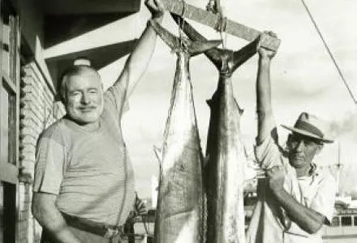
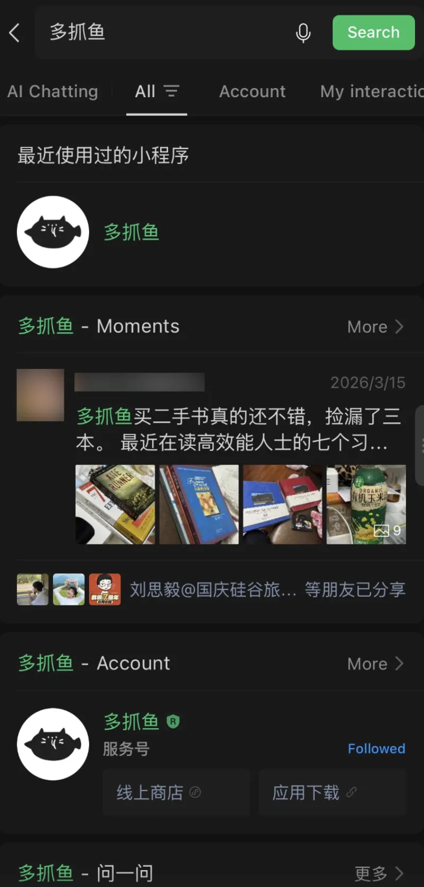
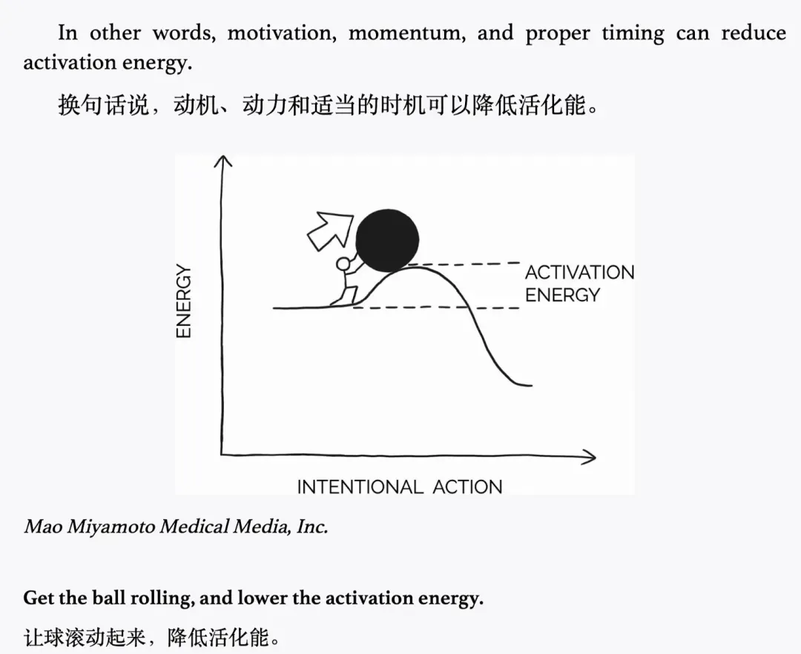

今天下午准备编辑发公众号，需要用一张海明威的照片。
我记得之前用过，于是在公众号后台搜了「海明威」的关键词。
没找到，又去 Google 搜了一下。
那张照片很有灵气，他手里拿着一条金枪鱼（还是什么别的鱼），跟他人一样高，我特别喜欢那张照片。

因为找不到照片，我就想到了那条鱼，想到了《老人与海》。
由此我又想到，张爱玲曾经翻译过《老人与海》那本书，我还没看过，挺想看的。
接着我去「多抓鱼」看看有没有这本二手书（怎么都是「鱼」啊）。
在搜「多抓鱼」的时候，发现某位好友发的朋友圈，分享了在「多抓鱼」买的几本书。

我随即想到，自己前几天也在「多抓鱼」买了书，而且也拍了照，那我是不是可以把照片翻出来分享出去？
于是我开始翻自己的相册，翻着翻着，翻到了那天在多抓鱼买的并看完的一本漫画书《春晖》。
我开始挑选要发朋友圈的照片，这时又翻到了我家的小猫咪站在门口看着我，超级无敌可爱。我又想着，我不仅要发买书的照片，应该还要发一点平时日常里小猫咪和可爱东西的照片。
到这儿，我突然意识到：哎，我刚刚是干嘛来着？
我原本只是想找一张海明威的照片！
这就是潜意识顺着「最小阻力之路」在运转的过程
根本不受我们自主控制。
海明威 → 鱼 → 《老人与海》 → 张爱玲 → 多抓鱼 → 朋友圈 → 相册 → 猫咪。
每一步都最省力，每一步都顺理成章，合起来却把我冲到了离起点十万八千里的地方。
我们的大脑并不按某种逻辑去运转，它其实是一种关联网络：从一个点连到第二个点，再连到第三个点，最终连成一个非常复杂的神经网络。
如果我们不对它加以设计，它就会在这些看似只是消耗的事情上，耗尽我们的精力，让我们无法做重要的事情。（那些手机软件的设计师深谙此道——他们的设计目的，就是让你的注意力以最小阻力掉进去。）
但如果我们加以利用，把它用在创作、学习、变得更好上，它就是很好的生成灵感的内在引擎。
我们不是改变行为的自控师，我们是设计最小阻力之路的设计师。
只要设计合理，我们只需要一点点启动能量，接下来就像小球到达山顶，顺其自然地会滚到山脚。

从起点到终点，可能有 1、2、3、4、5、6、7 步。
我们不需要巨大的毅力克服所有的 7 步。
我们只需要迈出第一步，后续就并不完全受我们控制，它会顺着阻力最小的方向去流动，让内在结构推着我们走。
这就解释了口喷为什么永远有话说？也是这张关联网络。你只要说出第一句，下一句自己会长出来——和把我从海明威冲到猫咪的，是同一股水流。
它不受控，但可以被引导。
今日开喷指引卡
打开录音，可以试着说：
1、留意并记录一次「我刚刚是干嘛来着？」
回忆最近一次注意力「翻车」现场——你本来要做 A，回过神来的时候正在做 F。把中间的链条一环一环复述出来：A 是怎么连到 B 的，B 又是怎么滑到 C 的。
说不全没关系，能抓回几环算几环。看见这条链子本身，就是今天的自我研究。
2、反过来：你想让这股水流替你干什么？
它反正要流。如果由你来设计河床，你想让它流向哪？
你今天能设计的、最小的第一步是什么？
现状是：还没有喷。
开录之后，不暂停、不重录、不回听。屏幕关黑。
说完可以来群里分享：「Day 2 ✅ + 你翻车链条的起点和终点」（比如：海明威 → 猫咪）。
—— 云不见 · 2026.07.08